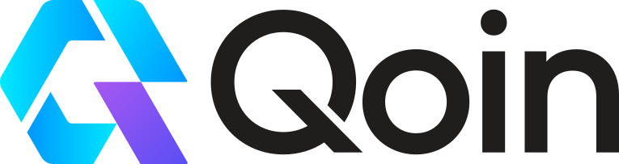

It runs on a public blockchain. You can hold it, send it, or accept it, and no Qoin company or foundation is required to administer the token or approve transactions.
Qoin transactions cannot be reversed, and activity on Base is public. Never share your recovery phrase or private key. Check the network and contract address carefully, and be cautious of anyone claiming to represent Qoin or offering guaranteed returns, exchange listings, token recovery, or official support.
Qoin is a peer-to-peer digital token that can be sent from one wallet address to another, much like a payment to a shop or a friend. It is not government-issued money, a bank deposit, or a security backed by an asset. It has value only when someone is willing to accept it for goods, services, or another trade.
Since July 2025, Qoin has operated on Base Mainnet. Its smart contract cannot create more tokens, freeze an address, or reverse a transaction. Your balance is recorded on the blockchain against your address. If you control the private key or recovery phrase for that address, you control the Qoin held there.
A wallet is software that manages your keys, displays your balance, and lets you sign transactions. It is not an account maintained by a company.
Qoin has no guaranteed value or liquidity. Holding or accepting it does not guarantee that you will later be able to sell it, spend it, or exchange it for cash. Wallet addresses, balances, and transactions can be viewed publicly on Base, although a person's name is not automatically attached to an address.
Qoin began in Australia in 2020 to help people and businesses trade directly, without a bank in the middle. It was designed for everyday use and not primarily for speculation.
Qoin was not intended to replace cash or national currencies. It was designed as a complementary means of exchange: a way for businesses to put spare or underused capacity to work, and for people to trade goods or services that had not found a willing cash buyer.
At the time, major public blockchains were not practical for everyday payments. Fees were high and confirmations were slow, making a coffee purchase or retail sale difficult to process. The workable alternative was a permissioned private chain: fast and inexpensive enough for retail, but operated by an organisation and not open for anyone to inspect or build on.
That private chain was intended as a starting point, not the final destination. The plan was always to move Qoin to a public network once the technology could support fast, low-cost everyday payments. Ethereum layer-2 networks, including Base, eventually made that possible.
Qoin moved to Base on 7 July 2025. Its supply is fixed, its code is public, and anyone with a Base-compatible wallet can hold, send, or accept it. Qoin no longer runs on the private chain.
The Qoin Foundation was established to steward the project and oversee its move from a private chain to Base. That work is now complete. A public token with no contract administrator does not need a foundation to keep operating.
Closing the Foundation is therefore the final step in its role.
Your tokens remain yours, and they continue to work. What happens next (which businesses accept Qoin, what tools people build, and whether it is listed on an exchange) is up to the people who use it. The closing notice is simply the public record of the Foundation's closure.
Qoin has always depended on two sides of a trade: someone who wants to spend it and someone willing to accept it in exchange for something of value. That has not changed.
If you already hold Qoin, it remains at your blockchain address. You can hold it, send it to another person, or use it with a business that accepts it. You do not need permission from an organisation. Protect your recovery phrase: it is the key to your wallet.
A business can accept Qoin for a sale or invoice, or offer it as a loyalty or promotional reward. There is no application form, membership requirement, or official directory. You and the customer agree on the exchange rate.
Qoin does not need a foundation to keep working. People can use it, businesses can accept it, communities can organise around it, and builders can create tools for it. There is no membership, application, or central approval process.
You can send Qoin to anyone willing to accept it, pay a participating business, or trade it directly for goods or services. The amount and value are agreed between the people involved.
Sending Qoin requires a small transaction fee on Base, normally paid in ETH. Some wallets may cover this fee for their users; others may require the sender to hold a small amount of ETH.
Before this notice was published, the Foundation transferred Qoin on Base to the original wallet addresses of holders who had not completed the migration themselves. To access those tokens, use the recovery phrase from your original Qoin wallet to restore that wallet in a Base-compatible self-custodial wallet.
Choose a wallet yourself and obtain it only from the provider's official source. Follow that wallet's instructions to restore an existing wallet, select the Base network, and add a custom token using these details:
Only enter your recovery phrase into a trusted wallet application when restoring the wallet. Never send it to another person, enter it into a support form or website, or share it with someone offering to help. Anyone who has the phrase can control the wallet and everything held in it.
At the time of writing Qoin is not listed on an exchange, so it does not have an exchange-generated public market price. People are free to agree on a value for each trade. They may choose to use the last published Indicative Fair-Trade Value as a historical reference, but it is not a live market price and is not binding.
You can begin accepting Qoin without registering or seeking permission. Decide what you are willing to offer, agree on the value with the customer, and provide a Base-compatible wallet address for payment.
Qoin can be used for a full or partial payment, on an invoice, or as a loyalty or promotional reward. It may be particularly useful when a business has spare capacity, such as unfilled appointments, unused inventory, or available services, and wants to generate an additional trade rather than leave that capacity unused.
A business choosing to accept Qoin should make its own decisions about pricing, record-keeping, wallet security, and how much Qoin it is comfortable holding. Users and businesses remain responsible for their own accounting, tax, regulatory, and legal obligations.
You do not need to write code to contribute. Community members can help make Qoin easier to use by:
Any directory, guide, group, or service is independently operated. It should clearly identify who runs it and should not present itself as official or endorsed by the former Foundation.
The Foundation will not provide formal support after it closes. Community members may choose to assist other users, and independent projects that use Qoin may provide support for their own products or services. Any such assistance is independent and is not Foundation support or endorsement.
A legitimate helper never needs your recovery phrase or private key. If anyone asks for either, stop communicating with them. Do not follow links or install software provided by an unknown person, and never allow someone remote access to your device or wallet.
Qoin is a standard ERC-20 token on Base, with support for EIP-2612 permit. Its contract is deployed, the code is public, and there is no contract administrator to coordinate with. Most tools built for standard ERC-20 tokens on Base can support Qoin without custom contract logic.
Builders might create:
Developers may also fork the open-source code to create a separate project. Any fork should be clearly presented as its own project, not as Qoin or a continuation of the Foundation.
| Resource | Details |
|---|---|
| Source code | github.com/qoin-foundation/Qoin-Token-Contracts |
| Licence | MIT: use, modify, and distribute, including commercially |
| Security review | PeckShield #2024-243, 28 September 2024 |
| Contract | View the address on BaseScan |
| Brand assets | Qoin lockup (SVG) · mark only (SVG) |
| Network | Base |
| Token symbol | QOIN |
| Token standard | ERC-20 with EIP-2612 permit |
The deployed contract, public code, audit, and Base network remain available. What does not remain is a central organisation offering grants, funding, introductions, access to a user list, technical approval, or project endorsement. There is no office to apply to and no official group that speaks for Qoin.
Anyone can start a project around Qoin, but that project represents only the people running it. If you create something, be clear about who you are, what you provide, and that your work is independent. That transparency will help people understand who they are dealing with and decide for themselves whether to take part.
Qoin continues to work because people use it with one another, not because an organisation stands behind it. The most important part of the original plan is complete: Qoin now runs on a public blockchain, its supply is fixed, and no one controls the contract.
The living part of Qoin was always the trade: a customer paying, a merchant accepting, and a loyalty reward moving back the other way.
If you already hold Qoin, you do not need to wait for anyone. Check your balance, keep your recovery phrase safe and offline, and use Qoin with people and businesses willing to accept it. Building a larger market is now community work. This site cannot organise that work or suggest that another organisation is about to take over.